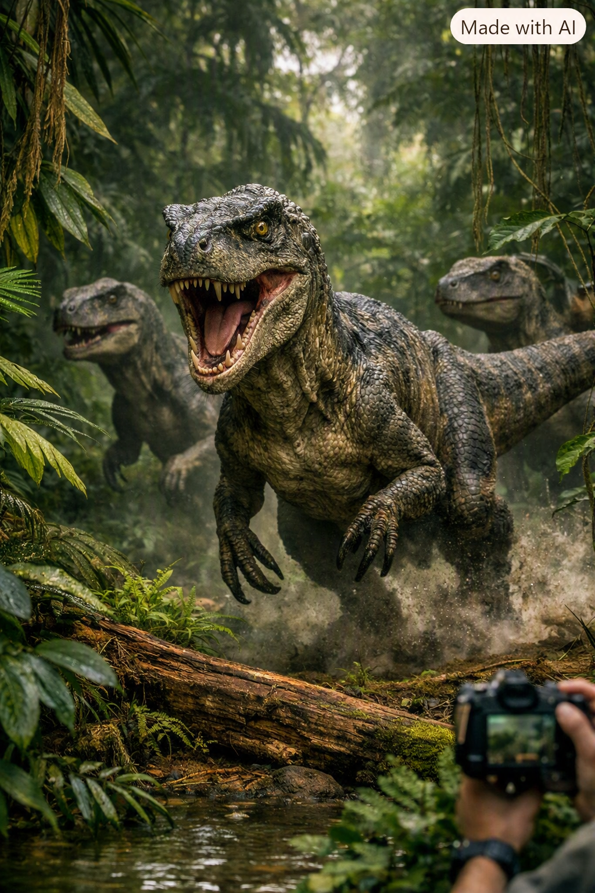

Grupo de Velociraptors é flagrado em floresta amazônica
Por Jurassic News – Amazônia, 14 de abril de 2027

Expedição registra encontro inesperado
Uma equipe de exploradores ambientais registrou o que parece ser um grupo de três Velociraptors em uma área remota da floresta amazônica. Os animais foram vistos caminhando entre árvores densas, exibindo comportamento de caça.
Os pesquisadores afirmam que o encontro durou menos de 20 segundos, mas foi suficiente para capturar imagens impressionantes que mostram os dinossauros com detalhes realistas.
Autoridades monitoram região
O governo federal enviou equipes de monitoramento para investigar a área e coletar evidências. A comunidade científica está em alerta, buscando explicações para o surgimento repentino de espécies consideradas extintas há milhões de anos.